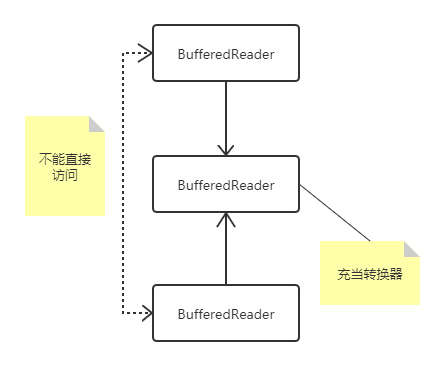

【设计模式】Adapter(Wrapper)-包装器
包装器模式（Adapter/Wrapper Pattern）
接口转换器、适配器
🌰举个栗子🌰
No 1. 电压转换头
No 2. java.io

1 | import java.io.BufferedReader; |
⚠️常见的Adapter类不是Adapter模式
一种编程方式
🌰举个栗子🌰
WindowListener接口，内含有很多方法
1
2
3
4
5
6
7
8
9
10
11
12
13
14
15
16
17
18
19
20
21
22
23
24
25
26
27
28
29
30
31
32import java.awt.*;
import java.awt.event.WindowEvent;
import java.awt.event.WindowListener;
public class Test {
public static void main(String[] args) {
Frame f = new Frame();
f.addWindowListener(
new WindowListener() {
public void windowOpened(WindowEvent e) {}
public void windowClosing(WindowEvent e) {}
public void windowClosed(WindowEvent e) {}
public void windowIconified(WindowEvent e) {}
public void windowDeiconified(WindowEvent e) {}
public void windowActivated(WindowEvent e) {}
public void windowDeactivated(WindowEvent e) {}
});
}
}
WindowAdapter抽象类，实现了WindowListener
当需要用WindowListener其中的一个方法时，只需要重写真正关心的方法即可
1
2
3
4
5
6
7
8
9
10import java.awt.*;
import java.awt.event.WindowAdapter;
import java.awt.event.WindowListener;
public class Test {
public static void main(String[] args) {
Frame f = new Frame();
f.addWindowListener(new WindowAdapter() {});
}
}
Comments